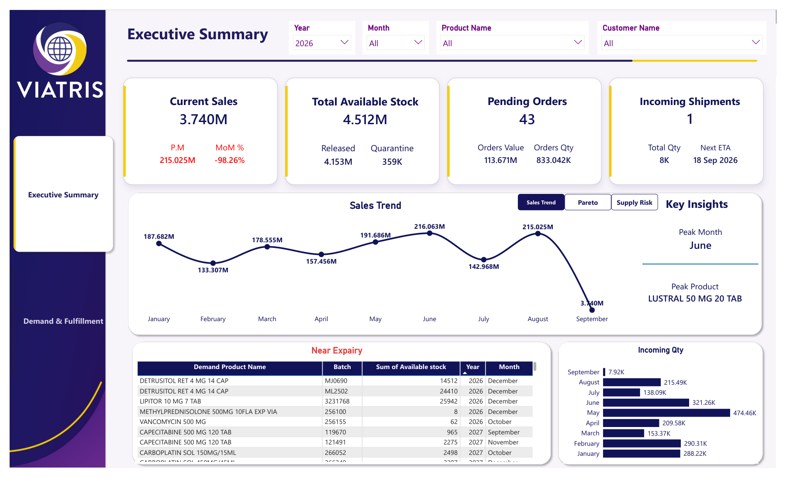
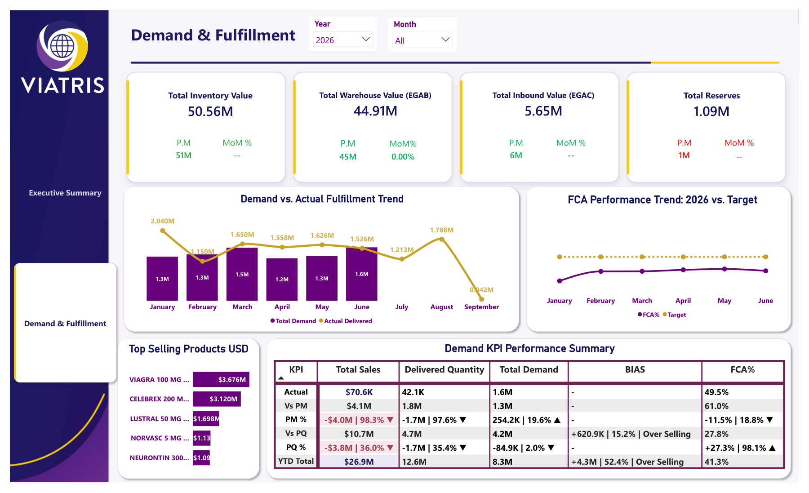

Demand Planning Dashboard
A two-page Power BI report for pharmaceutical demand planning, built on Viatris Pharma supply-chain data. It answers one question for planners and commercial leadership: are we fulfilling the demand we forecast, and where is stock about to become a problem? Page one is the executive view — sales, stock position, pending orders, incoming shipments and product-level supply risk. Page two goes into demand accuracy — demand vs. actual fulfillment, forecast accuracy against target, and inventory movement month over month.
Screenshots


What’s in it
This is a private project — the repository isn't public, so no GitHub link is shown here. Reach out directly for a walkthrough or a shared copy of the report.